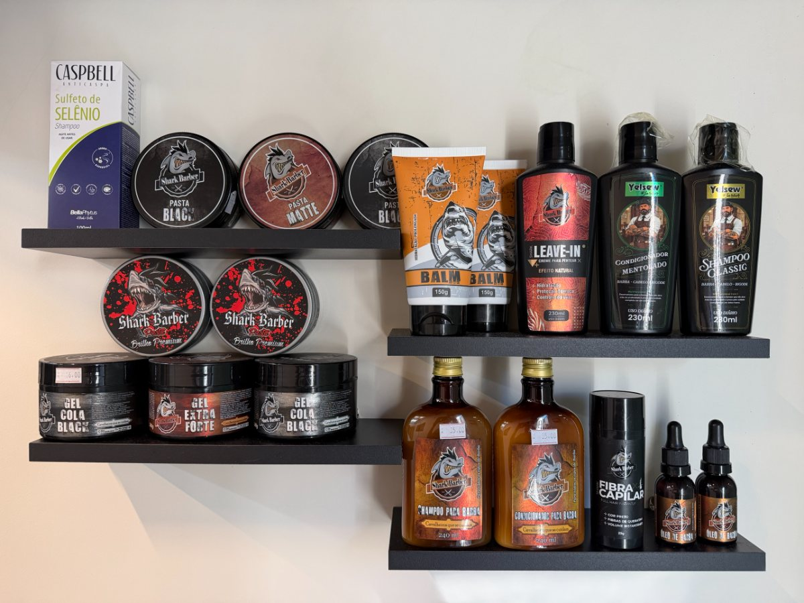

Reconstrução química pós-alisamento em Bragança Paulista
A reconstrução química pós-alisamento na Barbearia do Ju custa R$ 50,00 e leva aproximadamente 30 minutos. É a hidratação com reposição de massa e aminoácidos feita logo depois do alisamento, na mesma visita, pra o cabelo sair alinhado sem sair fragilizado.

Por que o fio precisa de reposição depois do alisamento
O alisamento age na estrutura interna do fio pra reduzir volume e alinhar. Nesse processo, parte da massa proteica e da umidade natural do cabelo se perde, e o fio tende a ficar mais poroso, mais seco e mais sujeito a quebra nas semanas seguintes. A reconstrução entra exatamente nesse momento: repõe aminoácidos e massa no córtex e fecha com hidratação, devolvendo resistência e maciez.
Como funciona na cadeira
Depois de finalizado o alisamento, o produto de reconstrução é aplicado mecha a mecha, com tempo de pausa, e removido em seguida. Na sequência entra a hidratação, que sela o trabalho e deixa o toque macio. Tudo acontece no mesmo horário, sem precisar voltar outro dia.
Diferença para a hidratação / reconstrução capilar
A hidratação / reconstrução capilar é a manutenção de rotina, indicada pra qualquer cabelo ressecado, com ou sem química. A reconstrução pós-alisamento é específica: foi montada pra o fio que acabou de passar pelo alisamento ou relaxamento, com foco em reposição de massa e aminoácidos.
Perguntas frequentes
Quanto custa a reconstrução pós-alisamento?
O serviço custa R$ 50,00 e leva aproximadamente 30 minutos.
A reconstrução é feita no mesmo dia do alisamento?
Sim. Ela foi pensada para entrar logo depois do alisamento, na mesma visita, quando o fio mais precisa de reposição.
Qual a diferença para a hidratação / reconstrução capilar?
A hidratação / reconstrução capilar é a manutenção geral, para qualquer cabelo ressecado. A reconstrução pós-alisamento é específica para o fio que acabou de passar pela química de alisamento: repõe massa e aminoácidos e hidrata em seguida.